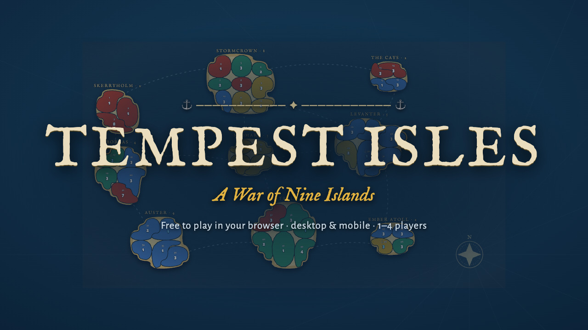
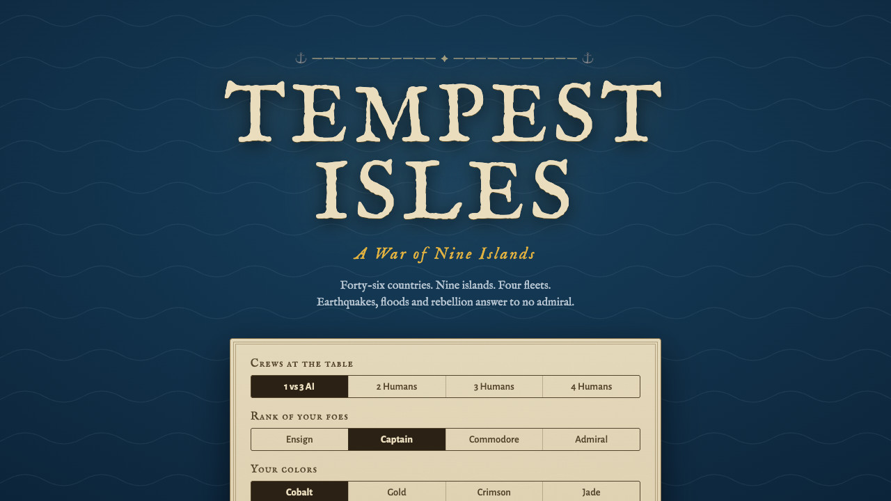
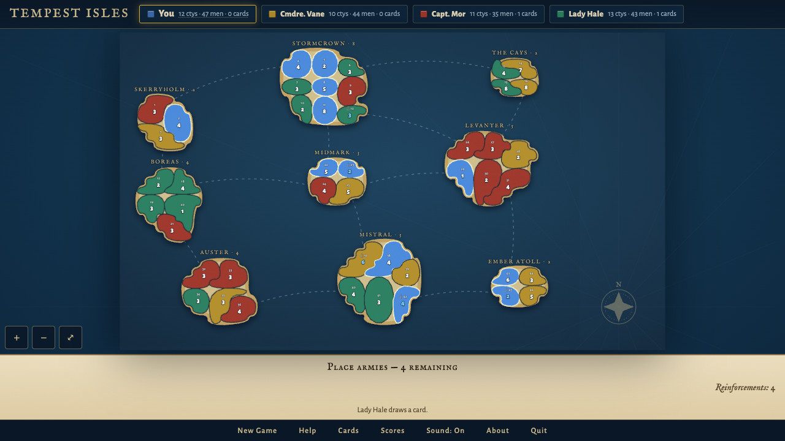
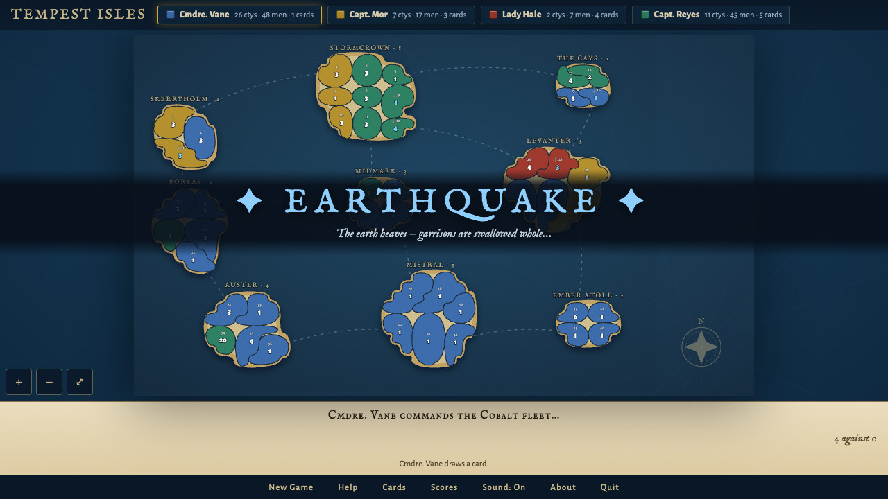
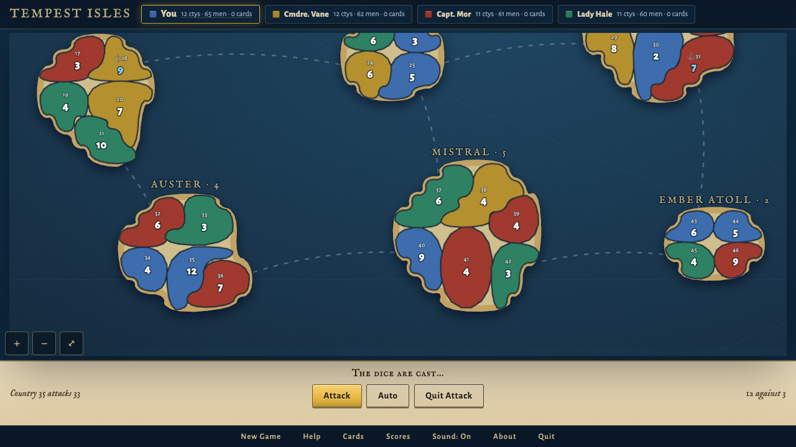
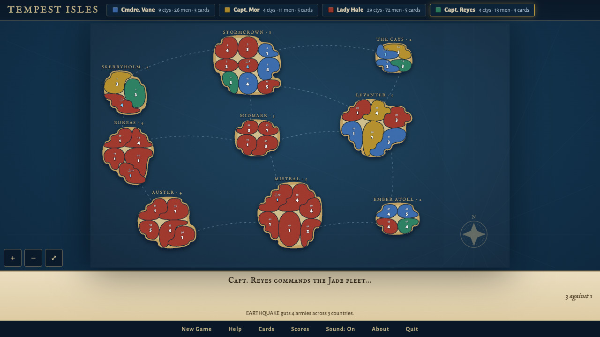
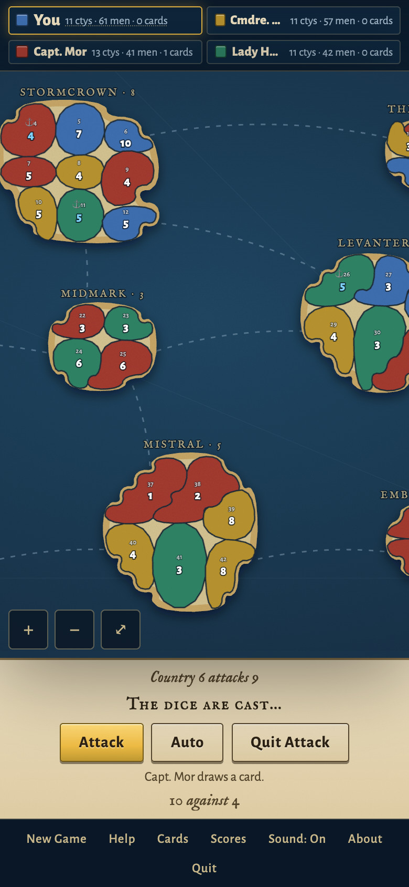
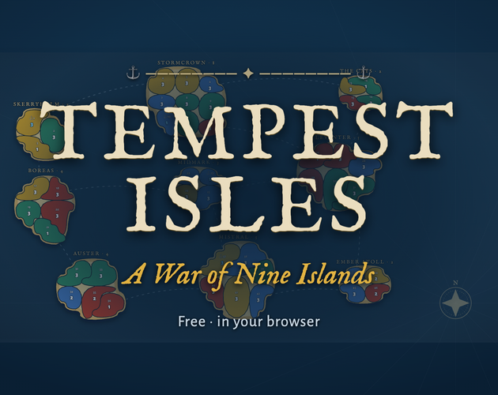

Tempest Isles — Press Kit

Everything here is free to use in coverage, videos and listings of Tempest Isles. Each item has its own download link.
Factsheet
| Title | Tempest Isles — A War of Nine Islands |
|---|---|
| Developer | Driftwood Games (independent, solo) |
| Release date | October 2026 |
| Platform | Web browser: desktop and mobile. No download or install. |
| Price | Free. Optional tips, which unlock nothing. |
| License | MIT (open source) |
| Players | 1–4 humans hotseat on one screen; AI captains fill any empty seats |
| Genre | Turn-based strategy, territory conquest |
| Website | tempest-isles.onrender.com |
| Source code | github.com/ljorgens/tempest-isles |
| Press contact | driftwoodgames@proton.me |
Description
Short (50 words)
Tempest Isles is a free turn-based browser strategy game. Four fleets fight over 46 countries on nine islands while earthquakes, floods and rebellions reshape the map. Play solo against three AI captains, or pass one screen between up to four players. An unofficial tribute to Soleau Software’s Isle Wars Pro.
Long (150 words)
Tempest Isles is a free, open-source strategy game of island conquest that runs in any modern browser, on desktop or phone. Four captains split 46 countries across nine islands. Each turn you muster reinforcements, deploy them, and attack: an equal or larger stack can strike a neighbor, but an assault worn down to its last army collapses and hands the defender your country. Hold a whole island for bonus troops, capture countries to draw cards like Rally, Bombard and Ward, and trade sets for fresh armies.
Between turns the isles fight back. Earthquakes and floods gut garrisons, rebels seize countries, and trade winds move the production centers. Play solo against three AI captains at four ranks, from Ensign to Admiral, or hotseat with two to four humans on one screen. No accounts, ads or downloads. Tempest Isles is an unofficial tribute to Soleau Software’s 2002 shareware classic Isle Wars Pro.
Features
- 46 countries on 9 islands, linked by sea lanes. Hold a whole island for bonus reinforcements.
- Solo or hotseat: play against three AI captains, or pass one device between 2–4 human players.
- Four AI ranks, from Ensign to Admiral. Each rank adds new behavior, not just bigger numbers.
- The rout rule: press an attack too far and your force collapses, handing the defender the country you attacked from.
- Disasters between turns: earthquakes, the Great Flood, rebellions, rebel takeovers, shifting trade winds and production surges, each shown on the map as it lands.
- Cards: army sets to trade in, Rally, Bombard, Ward, a wild Letter of Marque, and the dreaded Mutiny that costs your whole hand.
- Optional comeback rule: a defeated captain can, rarely, return from exile.
- Plays on phones: pinch and drag the map, with touch-sized controls. It is also fully playable by keyboard.
- Private by design: no accounts, ads, analytics or cookies. Free and MIT-licensed.
Credit
Tempest Isles is an unofficial, fan-made tribute to Isle Wars Pro (2002) by Soleau Software. It is not affiliated with or endorsed by Soleau Software. The rules follow the original’s manual; the code, map, art and sound are all new. All credit for the original game’s design goes to William Soleau and Soleau Software.
How it was made
Built by Driftwood Games with AI coding assistance (Claude).
Screenshots










On a phone

The phone layout, mid-attack (390×844 viewport, captured at 2×). 780×1688 JPG

GIFs and video


Key art

